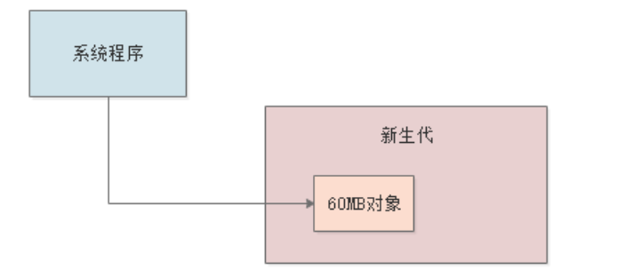
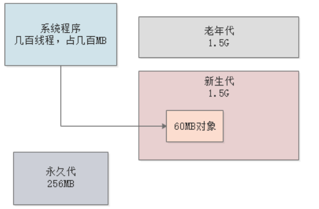
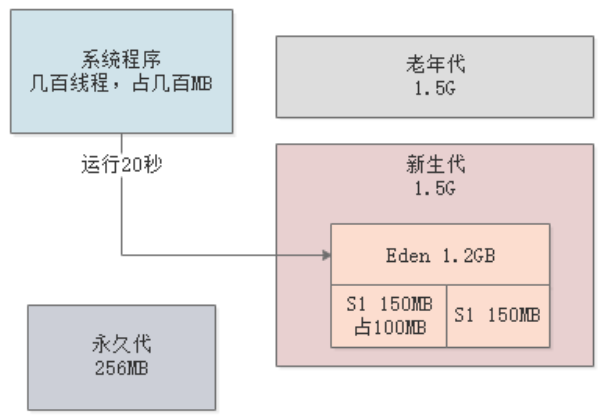
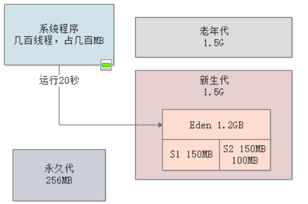
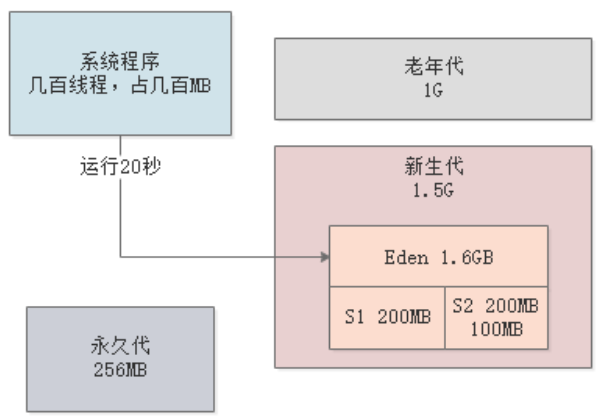

JVM基础（9）——新生代调优
一、简介
本章和下一章，我们将通过一个实际案例讲解如何进行JVM参数调优：合理优化新生代、老年代、Eden和Survivor各个区域的内存大小，接着再尽量优化参数避免新生代的对象进入老年代，尽量让对象留在新生代里被回收掉。
本章先针对新生代调优进行讲解，后续章节，我们会针对老年代调优再专门讲解，新生代调优的整个过程都围绕以下几点来思考：
- 每秒占用多少内存？
- 多长时间触发一次Minor GC？
- 每次Minor GC后，存活对象的平均大小是多少？
- Survivor能否容纳存活对象？
- 会不会因为Survivor无法容纳频繁进入老年代？
- 会不会因为动态年龄判断规则进入老年代？
我们先来看下案例的背景。
1.1 案例背景
假设生产环境有一个每日上亿访问量的电商系统，日平均订单量50万。在双11等大促场景下，峰值为每秒1000笔订单。现在部署3台4核8G的机器，每台每秒抗300笔订单请求。
我们的目标就是对JVM有限的内存资源进行合理的分配和优化，让JVM的Minor GC次数尽量少，同时尽量避免Full GC。
1.2 内存使用模型估算
交代完了背景，我们再来估算下高峰时期的JVM内存使用模型：
一笔订单一般20个左右的字段，按1kb算，那1秒钟300笔订单就是300kb，然后还需要算上其它业务对象（比如库存、积分、商户等等），所以放大20倍。此外，订单系统还有其它操作，特别是查询操作，同样耗费内存，所以再放大10倍，那么每秒钟的内存总开销就是：
$$
300kb2010=60MB
$$
我们假设1s过后，这60MB的对象都会失去引用变成垃圾。

二、JVM内存分配
2.1 初始情况
4核8G的机器，一般分配4G给JVM。假设最初状态下，Java堆内存分配3G（新生代1.5G，老年代1.5G），每个线程的栈空间1MB，一个JVM大概几百个线程，所以总共给虚拟机栈几百兆，然后再给永久代256MB：
-Xms3072M -Xmx3072M -Xmn1536M -Xss1M -XX:PermSize=256M -XX:MaxPermSize=256M -XX:SurvivorRatio=8
参数-XX:SurvivorRatio采用默认值8，即Eden和Survivor按照默认的8:1:1分配内存。
空间担保机制的JVM参数
-XX:HandlePromotionFailure在JDK1.6以后就被废弃了，JDK1.6以后只需要判断“老年代可用空间 > 新生代对象总和”或“老年代可用空间 > 历次Minor GC晋升到老年代的对象平均大小”，这两个条件满足任意一个，就可以直接进行Minor GC，不会提前触发Full GC。

2.2 优化Survivor空间
系统运行期间，每秒都会在新生代产生60MB对象，然后1秒后就失去引用，大约25左右，新生代中Eden区的1.2G空间就会被占满：

此时，就会触发是否进行Minor GC的判断，由于老年代可用空间（1.5G） > 历次Minor GC晋升到老年代的对象平均大小（0G），所以Minor GC直接运行，一下子回收99%的新生代中的垃圾，除了最近1秒的还在处理，剩下的都处理完了，总共余留大约100MB存活对象，存放对象放入S1区，然后清空Eden：

然后，再运行20秒后，Eden区再次被占满，再次触发并执行Minor GC，存放对象放入S2，同时清空Eden和S1：

按照上面的测算，每次存活对象的平均大小为100MB，Survivor区的大小为150MB，非常接近，很可能出现某次Minor GC后存活对象超过了150MB，导致Survivor区无法容纳，使得存活对象晋升到老年代。
此外，每次存活对象的年龄是相同的，根据动态年龄规则，100MB超过了Survivor的50%，所以很可能这100MB存放对象会直接晋升到老年代。
所以，Survivor区只分配150MB空间是不够的。所以可以考虑把新生代调整为2G，老年代调整为1G，这样每个Survivor就有200MB空间：

此时，JVM参数如下：
-Xms3072M -Xmx3072M -Xmn2048M -Xss1M -XX:PermSize=256M -XX:MaxPermSize=256M -XX:SurvivorRatio=8
对于任何系统，应尽量让每次Minor GC后的对象都留在Survivor中，不要进入老年代，所以Survivor区是首要优化点。
2.3 是否优化晋升年龄
默认情况，新生代存活对象的年龄到达15后，就会进入老年代，那么我们是否要通过参数-XX:MaxTenuringThreshold来调整年龄的上限值，以避免对象进行老年代呢？
答案是否定的，一般来说，经历了15次Minor GC还存在于新生代的，都是那些需要长期存活的核心业务对象，比如@Service、@Controller等注解的对象。对于这些对象，它们就应该进入老年代，况且这类对象的数量不会很多，一般一个系统也就是几十MB而已。
所以，反而可以降级晋升年龄，我们这里设置成5，即-XX:MaxTenuringThreshold=5。
2.4 是否优化大对象
大对象是可以直接进入老年代的，一般来说-XX:PretenureSizeThreshold这个阈值设置成1MB足以，因为很少有超过1MB的大对象。如果有，可能是你提前分配了一个大数组或集合之类的对象，用以存放缓存。
2.5 指定垃圾回收器
最后，还要指定垃圾回收器，新生代用ParNew，老年代用CMS，最终，JVM的参数设置如下：
-Xms3072M -Xmx3072M -Xmn2048M -Xss1M -XX:PermSize=256M -XX:MaxPermSize=256M -XX:SurvivorRatio=8 -XX:MaxTenuringThreshold=5 -XX:PretenureSizeThreshold=1M -XX:+UseParNewGC -XX:+UseConcMarkSweepGC
ParNew垃圾收集器的核心参数，其实就是配套的新生代内存大小，Eden和Survivor的比例，只要你设置合理，避免存活对象放不下Survivor而进入老年代，或者是动态年龄判断后进入老年代，那么Minor GC一般不会有什么问题。
三、总结
本章通过一个电商示例，分析了JVM新生代的参数优化，核心优化目的就是尽量让每次存活的对象都进入Survivor，避免进入老年代。
本章主要针对新生代进行优化，下一章我们将结合案例分析老年代的垃圾回收和JVM参数优化。